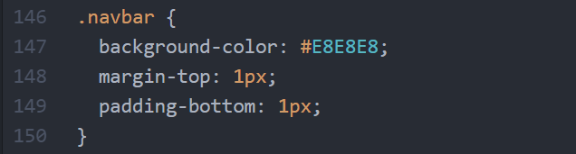
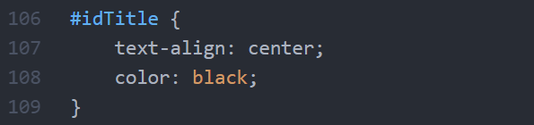
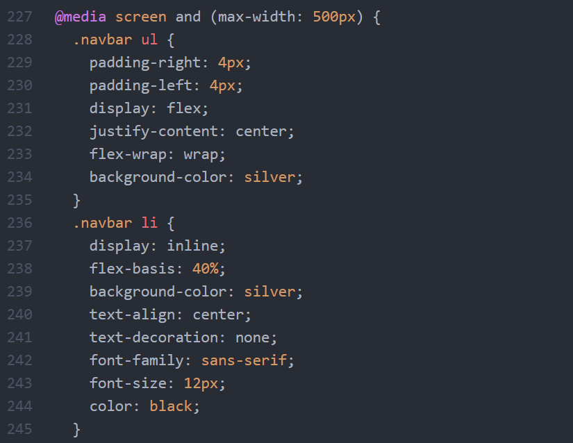

Validating my website
Validation is a process of checking your documents against a formal Standard, such as those published by the World Wide Web Consortium (W3C). A validator can be considered as a spell check for HTML and XHTML documents. There are different forms of validators.
An HTML validator is a quality assurance program used to check Hypertext Markup Language ( HTML ) markup elements for syntax errors. You can validate this page by clicking on the photo or by going to the bottom of the page.

The W3C CSS Validation Service is a free software created by the W3C to help Web designers and Web developers check Cascading Style Sheets (CSS). You can validate this page by clicking on the photo or by going to the bottom of the page.

Using class selectors
The class selector allows you to specify what specific HTML elements should be affected by a class. A class selector is created by starting with a period (.) character, followed by the name of the class. I used a class selector to create my discovery log navigation bar, which can be seen below.
Using ID selectors
The id selector uses the id attribute of an HTML element to select a specific element. The id of an element should be unique within a page, so the id selector is used to select one unique element. An id selector is created by starting with hash (#) character, followed by the id of the element. I used an id selector to create the title of this paragraph, which can be seen below.
Advanced CSS: Media Queries
Media queries use @media rules to allow CCS properties to be applied if certain conditions are met. This allows you to create different designs for different screen sizes. A page can be optimized and laid out completely differently for mobile phones, tablets, and varying browser window sizes. A media query was used to edit my discovery navigation bar. If the browser window is 500px or smaller, I wanted to change the discovery log navigation bar layout. The diagram below shows some of the CSS used to make this occur.
